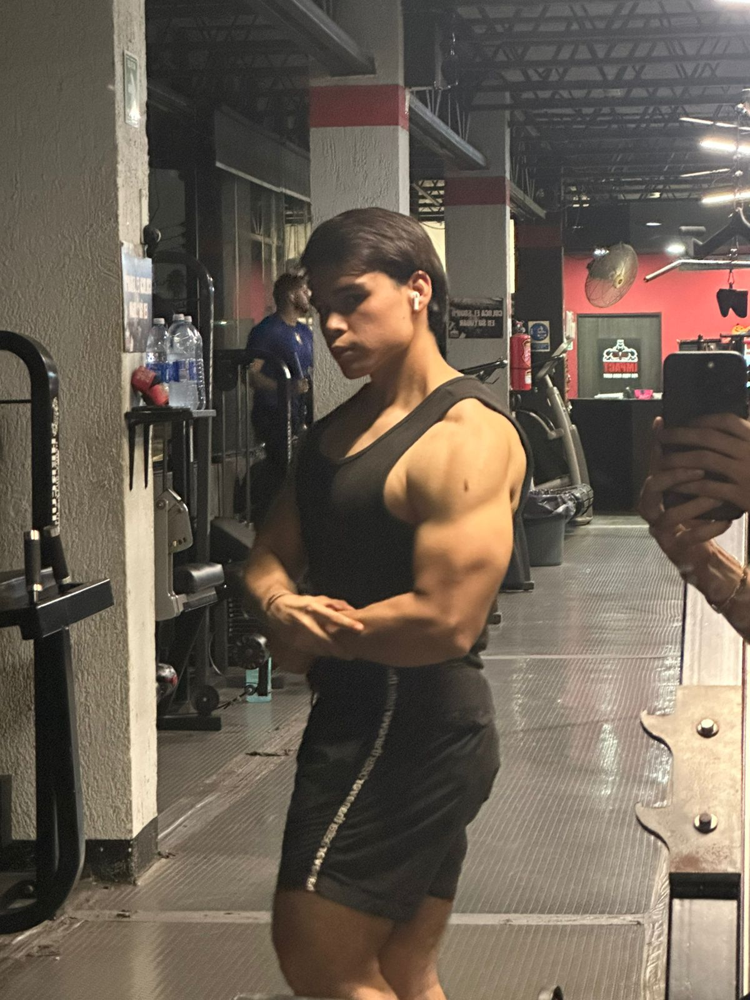
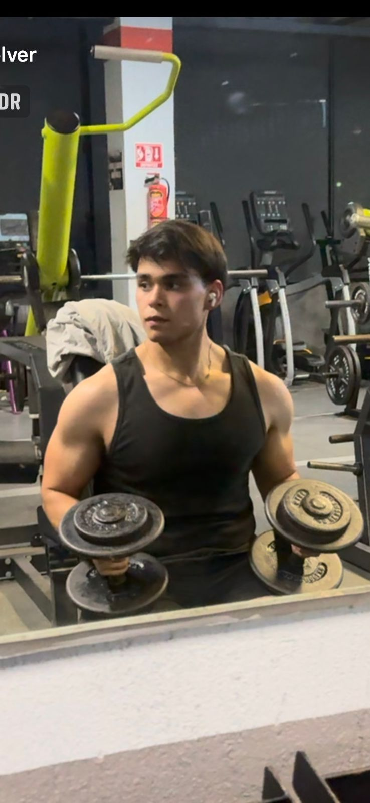
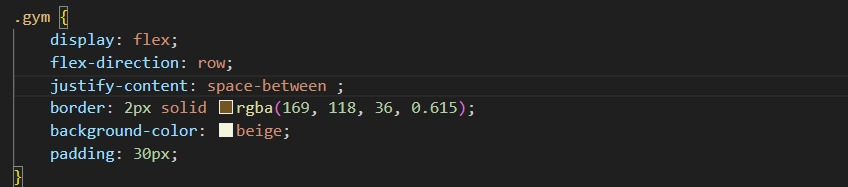

Inicio gym
Esta foto es de cuando empece en el Gimnasio pesando 143 kg.
El gym es uno de mis principales pasatiemos mas que un hobbie es algo que me relaja mucho aparte que me ayuda con mi salud, porque me ayudo mucho con mi cambio fisico.
Esta foto es de cuando empece en el Gimnasio pesando 143 kg.

Esta foto es en diciembte de 2025 con un buen estado fisico.

Aqui una foto con mi fisico actual a la fecha de hoy.
